Galerie
A travers la galerie sur ce site Web, la bibliothèque cherche à montrer périodiquement des expositions virtuelles de manuscrits d’auteurs sélectionnés et autres items ainsi que des thèmes particuliers.
Ces expositions ne comprennent pas seulement des images et des descriptions mais pourvoient également des commentaires de textes qui placent l’exposition dans un cadre et un contexte historique plus large. Les expositions virtuelles s’adressent et sont écrites pour un public large, et ne requièrent pas une connaissance significative majeure.
Les expositions suivantes sont actuellement en ligne:
| 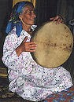 | Musique et Poésie des Montagnes du Pamir Les Pamiris sont divisés en différents groupes ethniques selon leurs origines et leurs langues. Plus |
| Lieux Musulmans de Culte et de Réunion Il existe une multitude d'espaces utilisés par les communautés Shiites et Sunnites pour leur culte et leurs réunions... Plus |
| 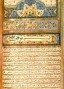 | La Calligraphie : Tradition en Islam Cette présentation est une version adaptée et éditée d'après une conférence donnée par le Dr Duncan Haldane à l'ouverture. Plus |
| 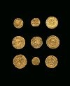 | La monnaie des fatimides Élegante et épigraphie conception ouverte caractérisent fatimide monnaie Plus |
| 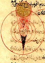 | De Ibn Sina à Tusi:Les Traditions Scientifiques dans les Sociétés Médiévales Musulmanes À partir du neuvième siècle, des érudits dans les terres musulmanes se sont progressivement engagés dans toutes les disciplines scientifiques. Un véritable trésor de pensées philosophiques et scientifiques Grec, Indien, Perse et Babylonien est devenu disponible à travers des traductions en arabe, et des philosophes scientifiques, des médecins, des mathématiciens et des astronomes – une communauté d’érudits incluant des Chrétiens, Juifs et Zoroastriens tout aussi bien que des Musulmans – ont enrichi cet héritage intellectuel par leurs propres contributions. Plus |
| 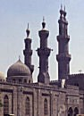 | Al-Azhar Al-Azhar (La Lumineuse), la grande mosquée centrale du Caire, fut construite par al-Qaid Jawhar al-Siqili lorsqu’il conquit l’Egypte au nom du Calife-Imam fatimide al-Mu‘izz li Din Allah en 969 JC et qu’il fonda Le Caire, sa nouvelle capitale. Elle fut inaugurée le 7 Ramadan 361 H / 22 juin 972 JC. Elle fut sans doute appelée al-Azhar d’après Fatima al-Zahra, la fille du Prophète Muhammad, à travers laquelle les Fatimides faisaient remonter leur ascendance au Prophète. Plus |
| 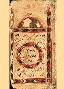 | Les manuscrits khojkis
L’Institut des Etudes Ismailies possède une vaste collection, de près de 800 volumes de manuscrits khojkis et gujaratis. Khojki, ou Khwajah Sindhi, est le terme qui s’applique aux écrits spécifiques utilisés par les Khojas (disciples de la foi ismaili nizari dans le sous-continent Indien) pour consigner leur littérature religieuse. Plus |
| 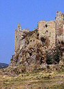 | Les Châteaux forts de la dynastie des ismailis Nizari d’Iran et de Syrie En 483/1090, les ismailis de Perse sous la direction de Hassan Sabah ont occupé les chateaux d’Alamut, situés dans la région éloignée et montagneuse du district de Rudbar, dans le nord de l’Iran. Pendant plus de 150 ans, les ismailis ont réussi à occuper plus de 200 forteresses plus ou moins importantes en Iran et en Syrie sur un territoire, comprenant des villes et des villages, qui était géré en toute autonomie. Plus |
| La collection Amirali Mamdani Une importante collection de diapositives, photographies et films originaux rassemblée par Monsieur Amirali G. Mamdani et lui appartenant exclusivement, a été présentée à l'automne 2001 à l'Institut des Etudes Ismailies. La collection de M. Mamdani est un témoignage visuel des événements significatifs et des sites historiques qui ont émaillé la vie de la communauté ismailie. Plus |
 | L’Institut des Etudes Ismailies : Réflexions sur les 25 premières années Depuis ses modestes débuts, à la fin des années 1970, l’Institut des Etudes Ismailies (IIS) s’est développé en un vibrant centre du savoir, s’adressant non seulement aux besoins de la communauté internationale ismailie, mais aussi en contribuant et participant dans les débats contemporains du monde Musulman en général. Plus |
| 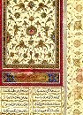 | "Wellsprings of Wisdom": Contributions perses à la Pensée ismailie La Bibliothèque de l‘Institut des Etudes Ismailies renferme l‘une des plus exceptionnelles collections d‘œuvres ismailies du Monde Occidental. L‘exposition intitulée "Wellsprings of Wisdom" (Les Sources de la Sagesse) est issue de cette collection dont certaines œuvres furent présentées pour la toute première fois. Cette exposition soulignait également les contributions littéraires des chercheurs-professeurs perses aux diverses rives de la pensée ismailie allant du 8ième au 18ième siècle. Plus |
| 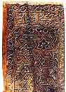 | Beauté instructive, harmonie illustrative : une galerie d’art pour célébrer le 25e anniversaire de l’Institut des Etudes Ismaéliennes (The Institute of Ismaili Studies – IIS) Se basant sur des exemples précis sélectionnés par l’Institut des Etudes Ismailies, l’exposition invite le public autour d’un thème, vaste et complexe, portant sur l’héritage artistique et intellectuel de l’Islam. Les objets d’Art représentent non seulement une grande diversité mais également un aperçu d’une culture vivante qui possède son propre langage artistique. Plus |
 | Délicatesse et harmonie dans les couvertures de livres persans L’art des reliures et de la protection de manuscrits est aussi vieux que l’écriture elle-même. La contribution faite par des artisans Musulmans a été un élément significatif dans l’histoire de ce métier et l’apport des artisans Perse a été particulièrement important. En réalité, ceux sont ces derniers qui ont introduit une série d’idées innovatrices, tout aussi bien techniques, qu’artistiques, et celles-ci ont eu par conséquence un profond impact sur les reliages de livres effectués durant la période Ottomane et Mogol. Dans les périodes antérieures à la production de livres dans le monde Islamique et plus particulièrement durant l’effervescence artistique de la période Mamluk, la couverture des livres à été généralement décorée dans un style sobre et quelque peu austère. Cependant, de nombreuses créations de couvertures réalisées par des artistes virtuoses ont pu être associées à des conceptions semblables dans d'autres formes d'art telles que la sculpture du bois ou du métal ouvragé. Parfois de la peinture dorée ou une décoration façonnée en or a été rajoutée pour accentuer certaines créations. Plus |
| 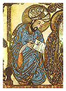 | From the Manuscript Tradition to the Printed Text: the Rasa’il of the Ikhwan al-Safa’ Les Ikhwan al-Safa’ (Frères de la Pureté) sont un pseudonyme porté par un groupe de penseurs musulmans qui, à la fin du neuvième et au début du dixième siècle, ont produit un corps encyclopédique de 52 épîtres (rasa’il), sur un large éventail de sujets allant de la cosmologie aux sciences physiques, de l’éthique à l’esthétique, et de la révélation à la métaphysique. Plus |
| 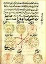 | Rahat al-‘aql of Hamid al-Din al-Kirmani The Rahat al-‘aql of Hamid al-Din al-Kirmani: An Arabic Manuscript from The Zahid Ali Collection Plus |
 Entrée
Entrée